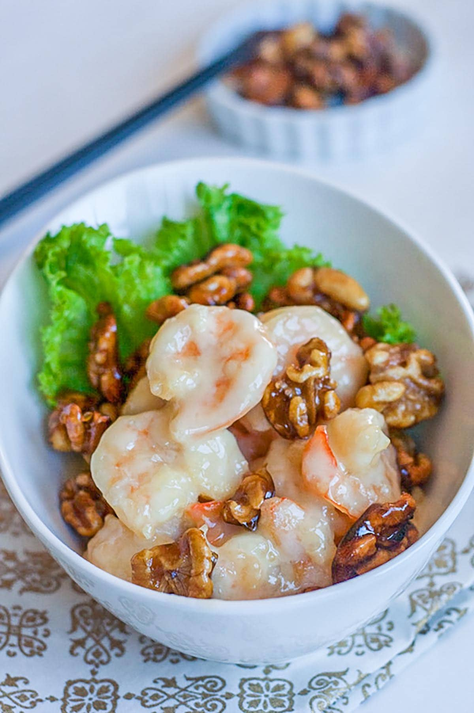

Honey Walnut Shrimp

Description
Honey Walnut Shrimp is a classic dish from Hong Kong
This dish is sweet and easy to make, it is one of the best convinient guilty-pleature food out there
Ingredients
- 1 c. water
- 1 c. granulated sugar
- 1 c. walnuts
- 1 lb. shrimp, peeled and deveined
- Kosher salt
- Freshly ground black pepper
- 2 large eggs, beaten
- 1 c. cornstarch
- Vegetable oil for frying
- 1/4 c. mayonnaise
- 2 tbsp. honey
- 2 tbsp. heavy cream
- Cooked white rice, for serving
- Thinly sliced green onions, for garnish
Steps
- In a small saucepan over medium heat, combine water and sugar and bring to a boil. Add walnuts and let boil for 2 minutes. Using a slotted spoon, remove walnuts and let cool on a small baking sheet.
- Pat shrimp dry with paper towels and season lightly with salt and pepper. Place eggs in a shallow bowl and cornstarch in another shallow bowl. Dip shrimp in eggs, then in cornstarch coating well.
- In a large skillet over medium heat, heat 1” of oil. Add shrimp in batches and fry until golden, 3 to 4 minutes. Remove with a slotted spoon and place on a paper towel lined plate.
- In a medium bowl, whisk together mayonnaise, honey, and heavy cream. Toss shrimp in sauce. Serve over rice with candied walnuts and garnish with green onions.